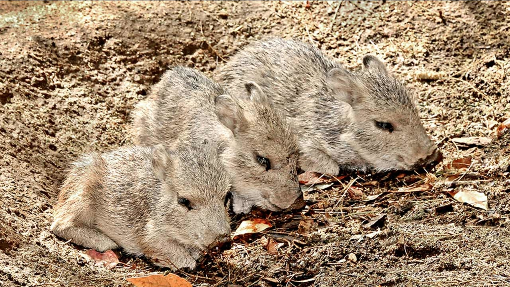
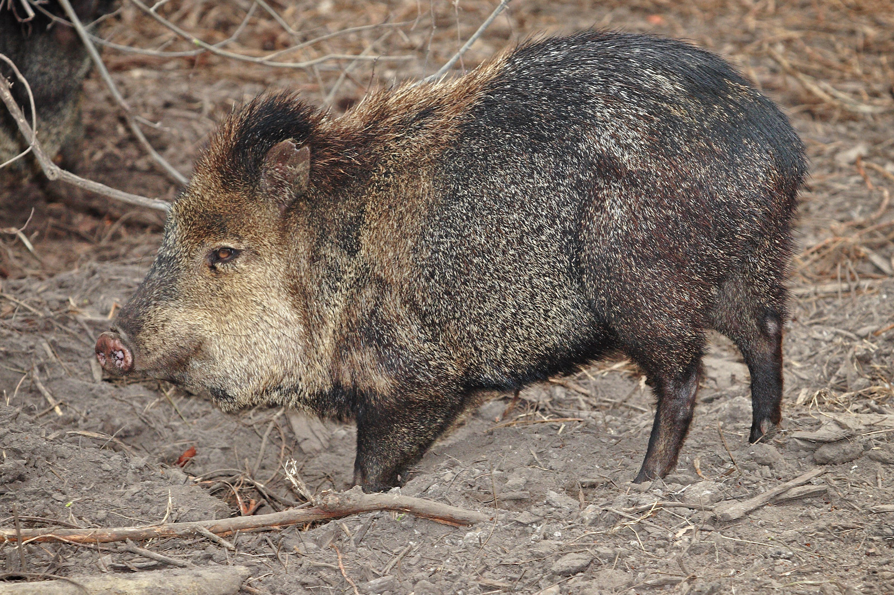
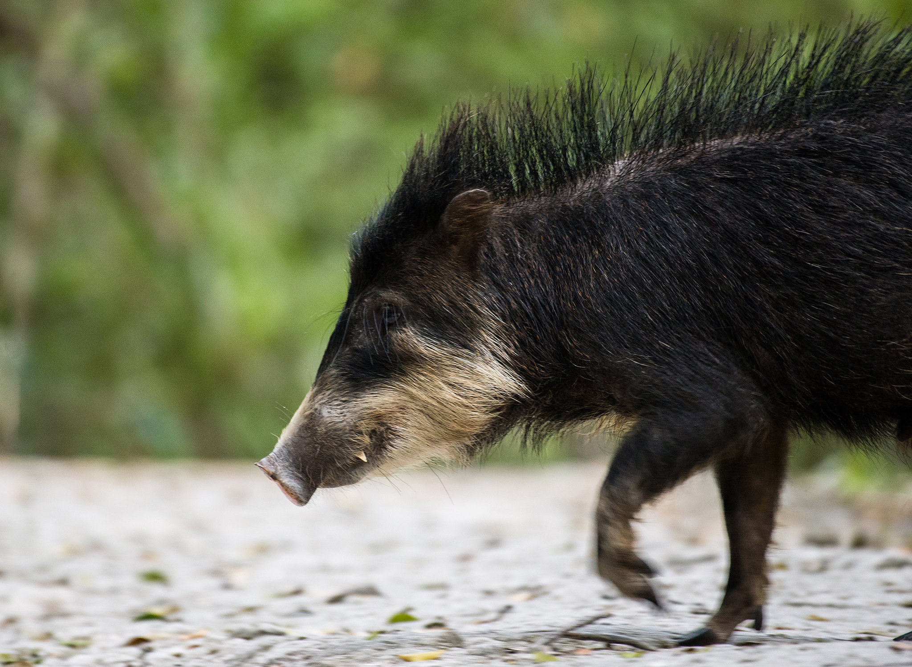
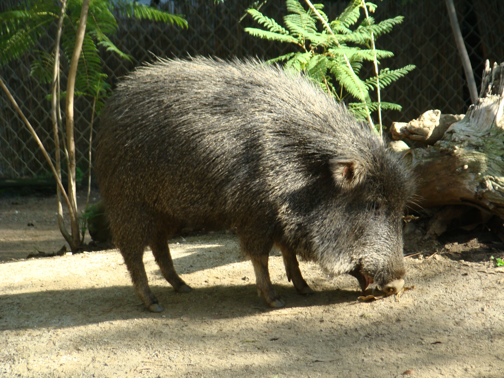

THE PECCARY
Peccaries are hooved mammals with small ears and short tails.
They are generally omnivorous. Their straight tusks can break open hard seeds.
They have been farm animals and pets, like pigs.
Kind of Peccary
Characteristics

Collared Peccary
Slender legs, primarily herbivorous

White-lipped Peccary
Strong scent glands, brown/black coat

Chacoan Peccary
Small feet, developed sinuses

To the top
Go back